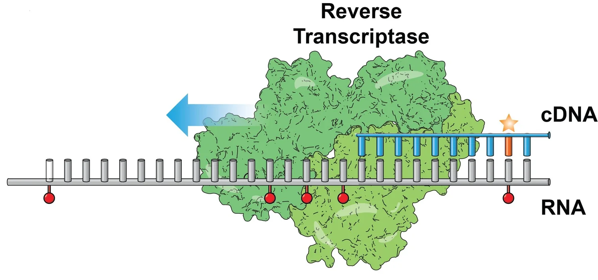

Explainers
Technical stories behind selected methods and models.
These pieces sit next to the primary literature rather than replacing it. They are written for readers who want the measurement, the math, and the biology in one place — without dumbing any of it down. Inspired by Distill and Thinking Machines writing.

Method explainer
DMS-MaPseq: reading RNA accessibility as mutations
How chemical probing, reverse transcription, and sequencing combine to produce RNA accessibility signal — both in vitro and inside living cells — and what the data does and does not tell us about structure.
Open explainerModel explainer
RNA language: how an RNA language model exposes structure from sequence
A technical story about mutation scans, dependency maps, IRES structure, and how sequence-trained models can be interrogated against RNA structural biology rather than just benchmarked on it.
Open explainerMore explainers are in preparation. If there is a method or paper from the lab you would like to see written up here, please get in touch.